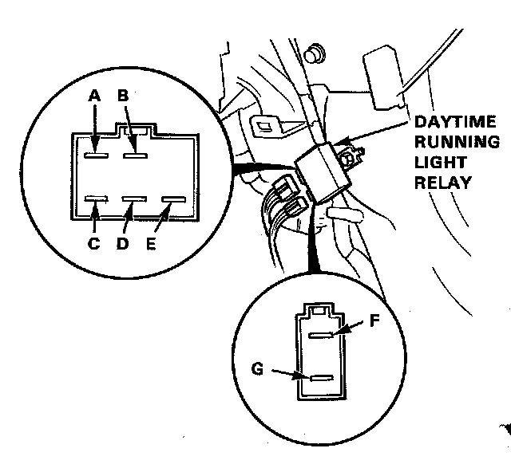
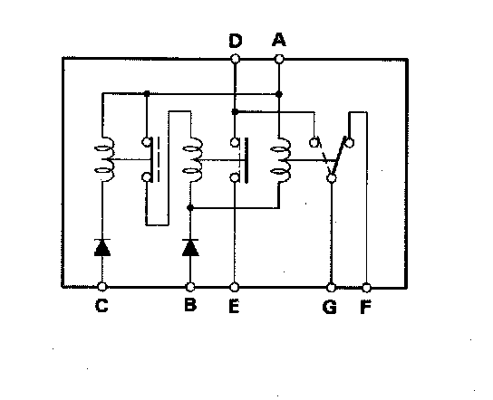

Daytime Running Lamp Relay: Testing and Inspection
Daytime Running Light Relay Test
1. Remove the right side kick panel.
2. Remove the relay, then disconnect the 6-P and 2-P connectors.

3. There should be continuity between the F and G terminals.
4. There should be continuity between the D and E; D and G terminals when the battery positive is connected to the B terminal and negative to the A terminal.

5. There should be no continuity between the D and E terminals when the battery positive is connected to the B and C terminals and negative to the A terminal.